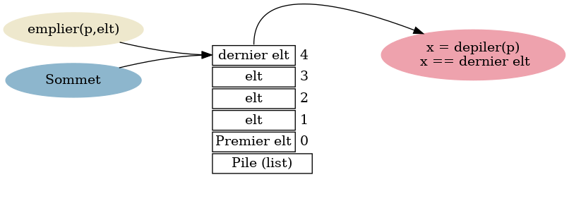

Structures de Données Avancées
Les structures de données sont un élément essentiel de la programmation, utilisées pour organiser et gérer des données de manière efficace.
Deux structures de données couramment utilisées pour résoudre divers problèmes sont les piles (stacks) et les files (queues).
Les Piles (Stacks)
Une pile est une structure de données linéaire basée sur le principe Last In, First Out (LIFO). Cela signifie que le dernier élément ajouté à la pile est le premier à être retiré.
Imaginez une pile d'assiettes : vous ajoutez toujours une nouvelle assiette au-dessus et vous la retirez également du dessus.
Les opérations fondamentales d'une pile sont :
Push / Empiler : Pour ajouter un élément au sommet de la pile.
Pop / Depiler : Pour retirer l'élément du sommet de la pile.
Peek / Sommet : Pour consulter l'élément en haut de la pile sans le retirer.
isEmpty / Est_vide : Pour vérifier si la pile est vide.
size / Taille : Pour connaître le nombre d'éléments dans la pile.

Les piles sont utilisées dans diverses applications telles que l'évaluation d'expressions mathématiques, la gestion de la navigation dans un logiciel, la réversibilité d'actions, etc.
Les Files (Queues)
Une file est également une structure de données linéaire, mais elle suit le principe First In, First Out (FIFO). Cela signifie que le premier élément ajouté à la file est le premier à être retiré.
Imaginez une file d'attente dans un magasin : la première personne arrivée est la première à être servie.
Les opérations fondamentales d'une file sont :
Enqueue : Pour ajouter un élément à la fin de la file.
Dequeue : Pour retirer l'élément du début de la file.
Front : Pour consulter l'élément au début de la file sans le retirer.
isEmpty : Pour vérifier si la file est vide.
size : Pour connaître le nombre d'éléments dans la file.
Les files sont utilisées dans des situations où l'ordre d'arrivée ou de traitement des éléments est important, comme la gestion des tâches dans un système de files d'attente, la collecte de données dans un buffer, etc.
Implémentation en Python
Python offre la flexibilité d'implémenter des piles et des files à l'aide de listes (ou de la bibliothèque collections.deque pour des files plus efficaces).